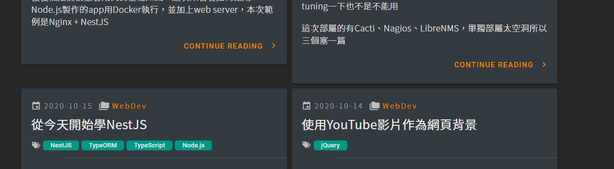
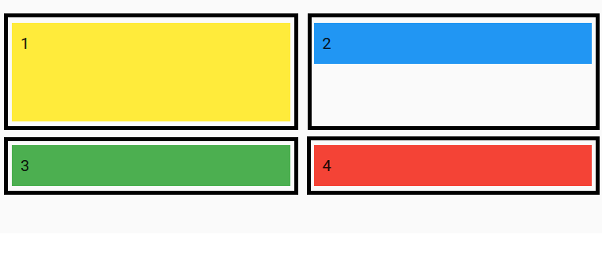
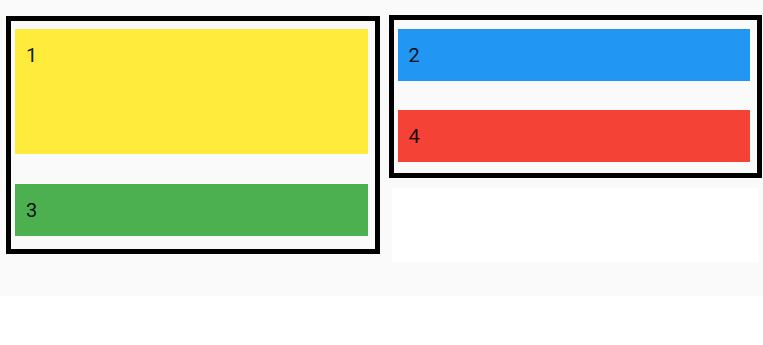

突發奇想的筆記，想改變element的順序，但又不想用jQuery的.insertBefore()或.insertAfter()等等該怎麼辦？ 如果是用vuetify，或許可以考慮一下這種作法
昨天上網閒晃，看到一位大佬的blog，雖然內容不錯，但第一眼吸引我的還是頁面設計
看了真讓人羨慕(請原諒我截大佬的圖，畢竟該主題原作者的demo掛了)
這位大佬用的是叫做MaterialFlow的Hexo主題，可惜我用的是Hugo…
如果我用vuetify的grid來並排的話，基本上會是像這樣缺角
而這個主題還是RWD！嗯…就覺得該模仿一下了
首先，現在的的狀態是這樣
1 row 4 column格線切好好很漂亮，但沒辦法用css的方式把card往上切齊
所以勢必要變成一個1 row 2 column

但到了breakpoint順序就變這樣了
說好的1234呢(崩潰
如此一來勢必要操作一下DOM，來強制改變順序，拿大佬的blog示範

果不其然…
如果直接對element動手的話老實說也很麻煩，但在不放棄SPA的情況下，只好用土方法了，也就是將vuerify的breakpoint作為條件
<v-row>
<v-col cols="6" xs="12">
<div v-if="$vuetify.breakpoint.xs">
<div v-for="(item, i) in displayPosts" :key="i">
...
</div>
</div>
<div v-else>
<div v-for="(item, i) in displayPosts" :key="i" v-if="i % 2 === 0">
...
</div>
</div>
</v-col>
<v-col cols="6" xs="12">
<div v-if="!$vuetify.breakpoint.xs">
<div v-for="(item, i) in displayPosts" :key="i" v-if="i % 2 === 1">
...
</div>
</div>
</v-col>
</v-row>
下列是一個簡易的demo
這麼一來我也有這樣子的主頁啦
總之…layout出來的結果差不多應該就沒問題了吧…？